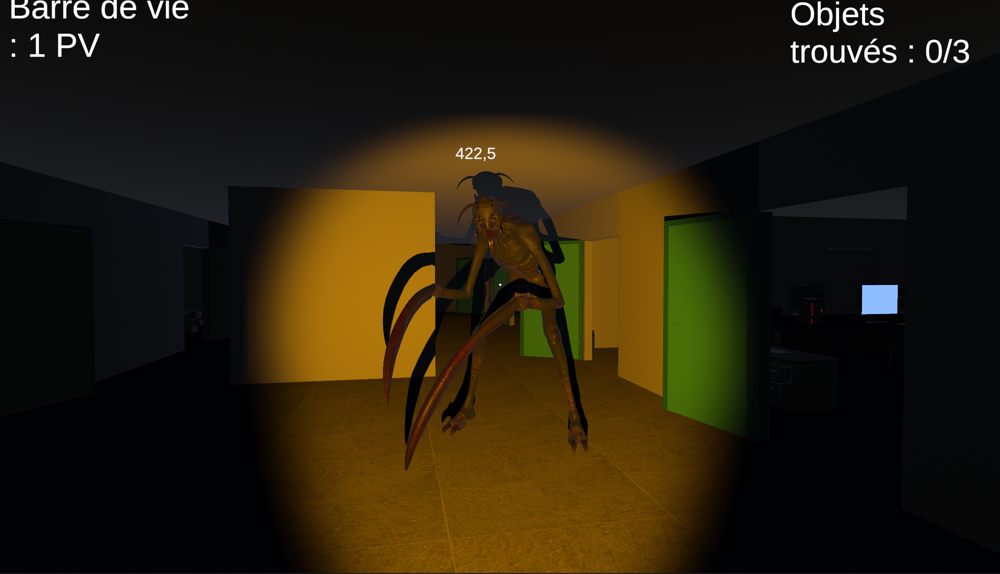
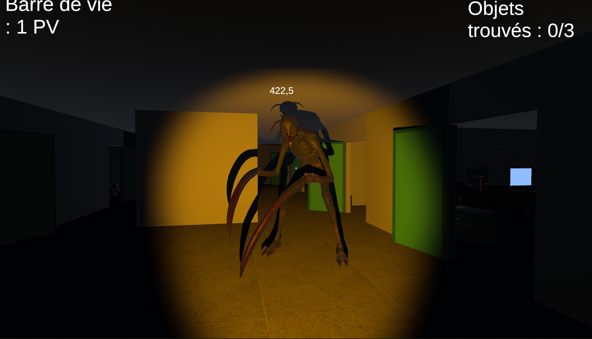

Louis RIVES-LEHTINEN
Licence d'informatique | CERI AvignonErasmus | VUT Brno University of Technology Télécharger mon CV
Réalisé dans le cadre d'un évènement "24H pour coder" organisé par l'université d'Avignon, "Une nuit au CERI" est un jeu d'horreur à la première personne réalisé sur Unity par 3 collaborateurs et moi-même. Le principal défi de cet évènement a été de se répartir les tâches dans un temps donné.
Le principe du jeu est simple : le joueur se retrouve emprisoné dans le CERI (Centre d'Enseignement et de Recherche en Informatique), et il doit s'en sortir en récupérant 3 clés cachés, le tout en évitant de se faire attraper par le monstre qui rôde.
Cette expérience a marqué ma première utilisation de Unity, que j’ai découvert et appris au fil du projet. Mes principales tâches consistaient à gérer l’aspect graphique du jeu. J’ai commencé par remodéliser le CERI, en recréant les structures et en veillant à représenter fidèlement l’environnement. Je me suis également chargé de concevoir et de placer les objets dans l’environnement, en réfléchissant à leur disposition pour équilibrer immersion et jouabilité. Une part importante de mon travail a été d’ajuster la luminosité et les effets d’éclairage, notamment en intégrant une lampe torche fonctionnelle pour renforcer l’atmosphère du jeu. Enfin, bien que j’aie conçu plusieurs éléments moi-même, certains assets ont été récupérés sur le Unity Store pour gagner du temps et garantir une certaine cohérence graphique. Cette première expérience avec Unity m’a permis de développer mes compétences et de contribuer au projet de manière créative.
Principales caractéristiques :
 
